A ghost diamond garden trellis with the SDLR monogram in alternating diamonds, gloss black over midnight green flake, with gold lettering in clean oval windows. Gio's verdict: too gaudy. An all-over monogram reads as a fashion print, so version 10 goes the other way. Kept here as history.
Photo-style images made with Magnific (AI, Nano Banana Pro), made from Gio's own photos of his car. On the side image the AI lettering was replaced with the exact artwork; on the rear the plate was painted blank.
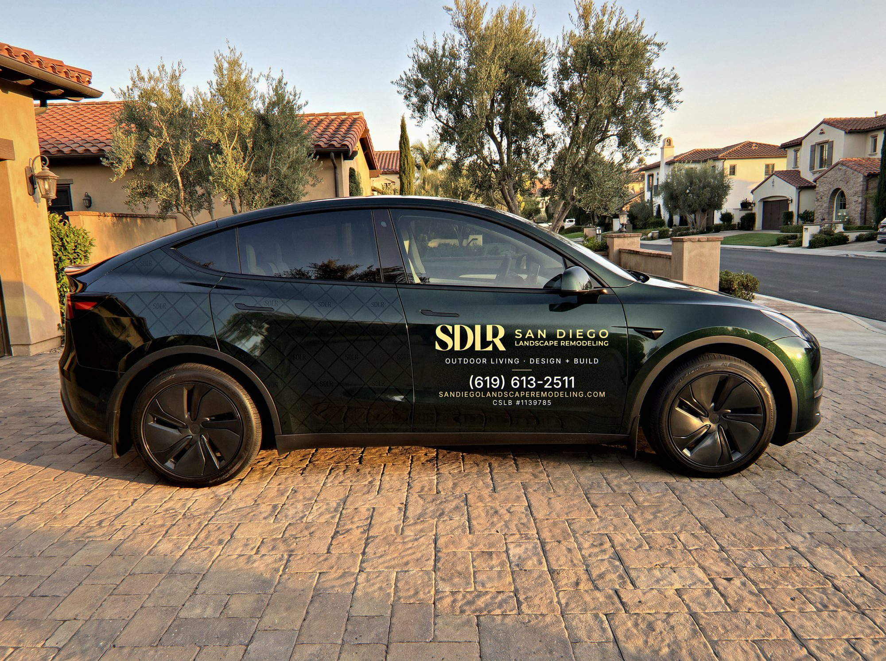
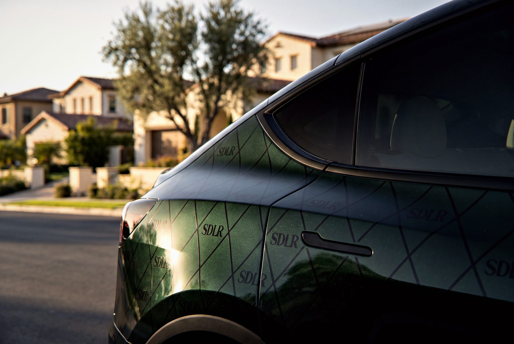
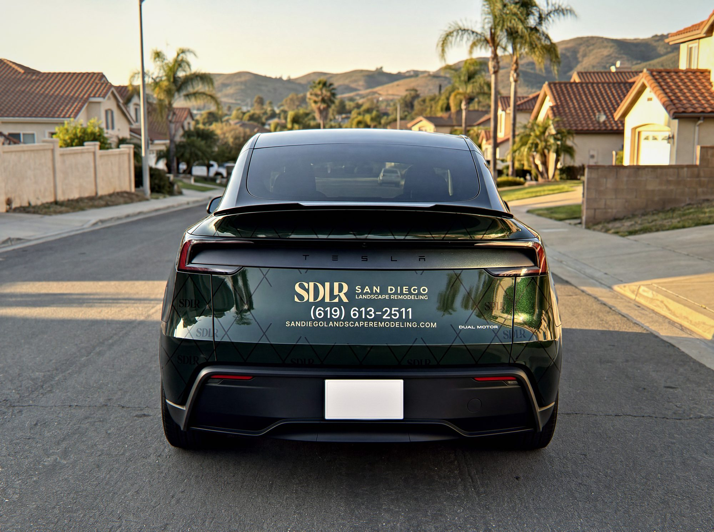
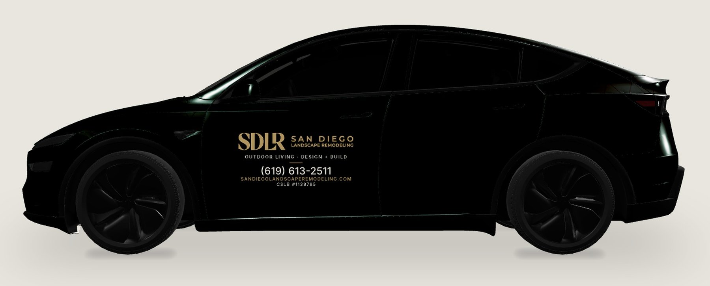
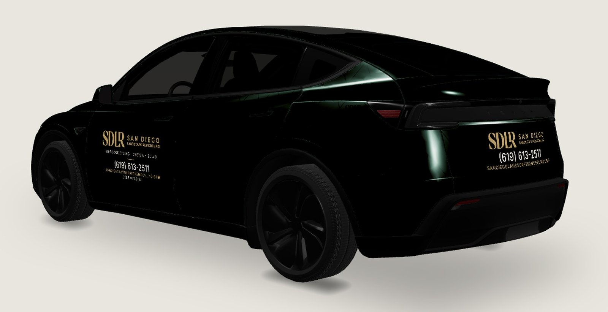
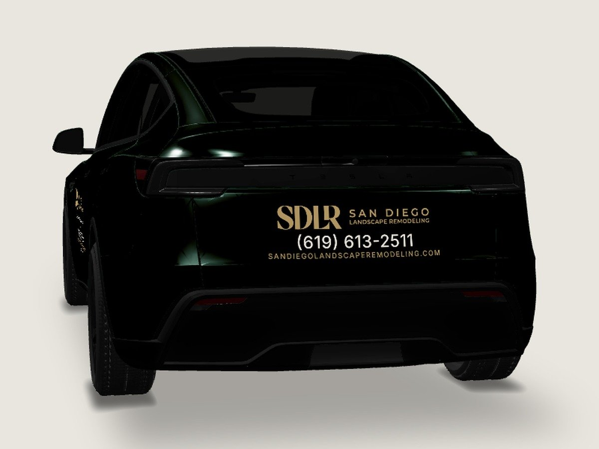
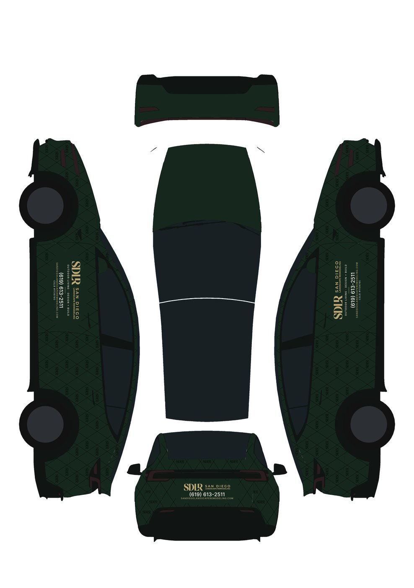
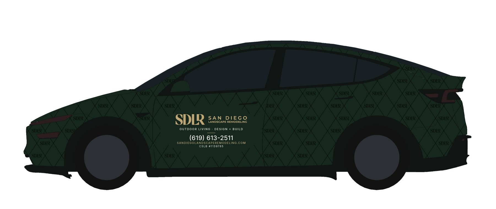
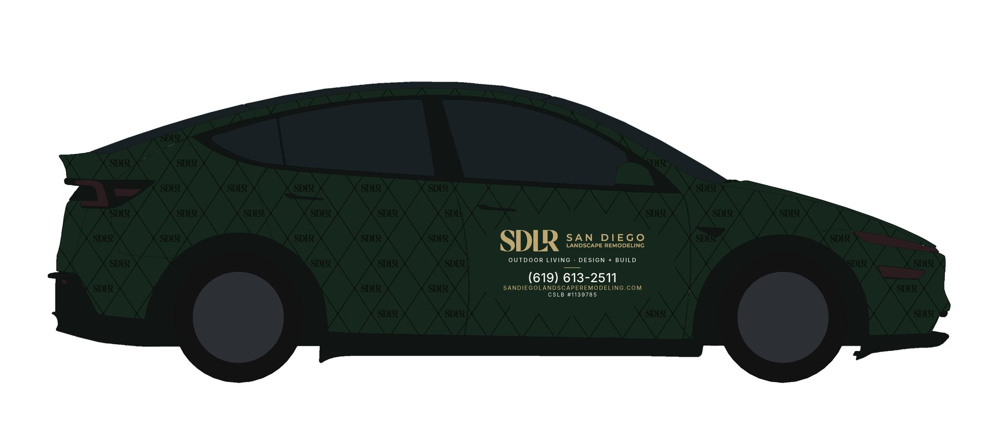
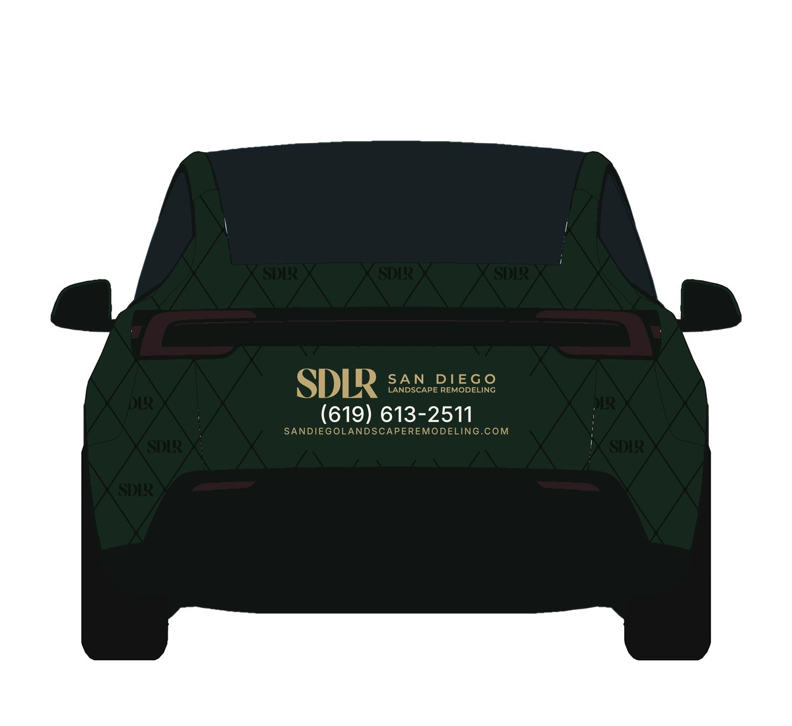
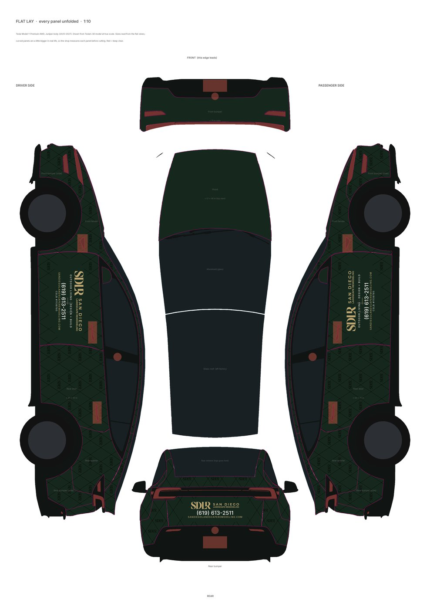
| Body | Midnight green metallic colour-change film with real flake: almost black in shade, deep green in the sun (samples: TeckWrap HM07 Green Black, Inozetek MSG023 Metallic Midnight Green) |
| Pattern | Ghost trellis + monograms, gloss black |
| Lettering | Gold lockup 30 in, cream tagline and phone, gold website, in oval cartouches |
Working files (layered .ai, print PDF at 1:10, proof PDF, README) live in Drive:
02 Clients/san-diego-landscape-remodeling/Vehicle/wrap-design/2026-11-21-v9/ (every earlier version kept beside it)